Descoperă ce este o foaie de calcul, cum arată interfața Microsoft Excel, ce poți face cu formule și funcții, cum construiești grafice sugestive — și exersează pe un fișier Excel pregătit special pentru tine.
O modalitate de a gestiona date organizate sub formă de tabel — numele vine chiar din contabilitate, unde se foloseau formulare de hârtie de mari dimensiuni, liniate orizontal și vertical.
Utilizarea calculatorului a adus avantaje uriașe față de foaia de hârtie:
De exemplu: ai un tabel cu 15 materii și 5 note la fiecare. Dacă media fiecărei materii e calculată printr-o formulă, iar tu schimbi o singură notă, media acelei materii — și media generală — se recalculează instant, fără niciun calcul manual.
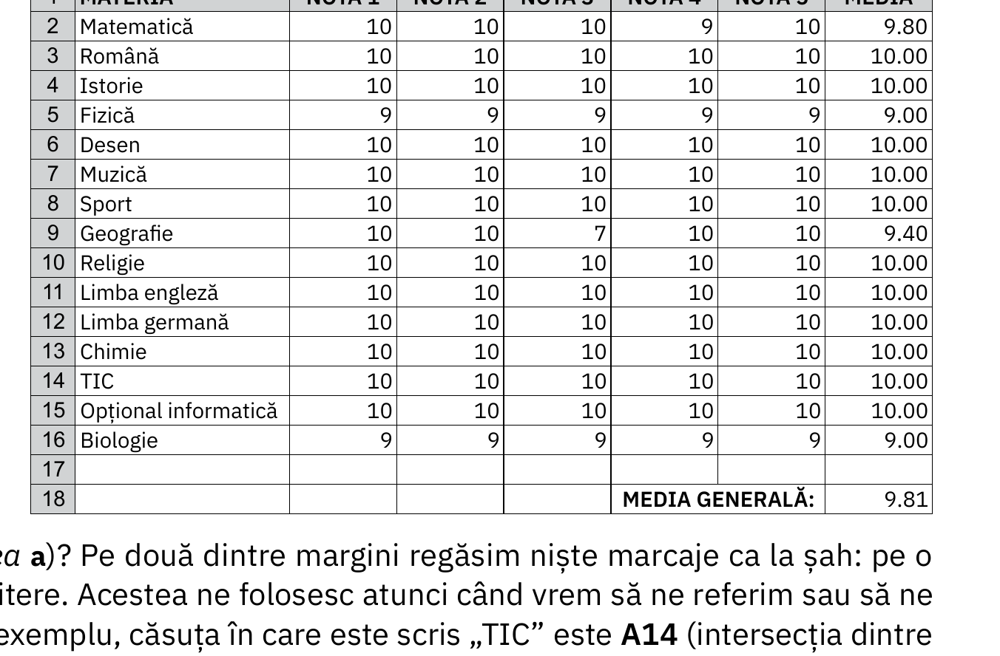
Aplicațiile dedicate lucrului cu foi de calcul se numesc programe de calcul tabelar. Cele mai populare:
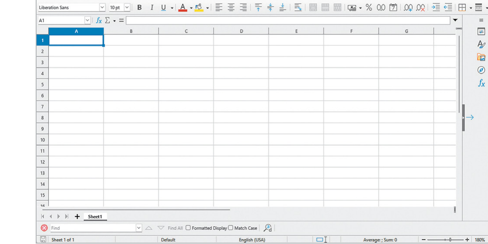
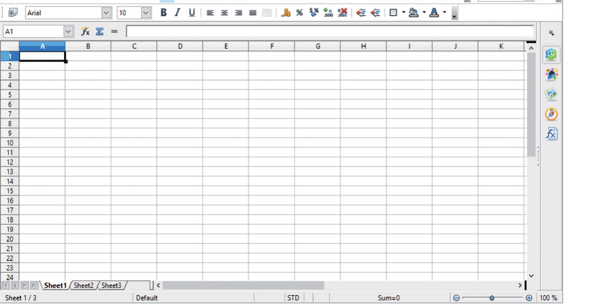
Fiecare are avantaje și dezavantaje: MS Excel e cel mai popular, deci găsești ușor ajutor; Calc și Spreadsheets sunt gratuite; unele se instalează pe calculator (merg și fără internet), altele sunt online (nu ocupă spațiu de stocare, dar au nevoie de conexiune la internet).
MS Excel (sau, simplu, Excel) este cel mai cunoscut program de calcul tabelar, componentă a pachetului Microsoft Office. Un fișier lucrat în Excel poate avea una dintre extensiile: .xls, .xlsx, .xlsm.
Pornirea aplicației se face la fel ca la Word: Start → All Apps → Excel, sau tastezi „Excel" în bara de căutare Windows și apeși Enter. La deschidere apare un ecran de start de unde poți alege:
Foaie de calcul, coloană, rând, celulă, zonă, registru — noțiunile de bază pe care le folosești tot timpul în Excel.
Un singur tabel, numit și foaie de lucru (worksheet). Are rânduri etichetate cu numere (1, 2, ...) și coloane etichetate cu litere (A, B, ...) — până la 1 048 576 de rânduri și 16 384 de coloane.
Unitatea elementară a tabelului, aflată la intersecția unui rând cu o coloană. Se accesează prin eticheta coloanei + rândului: de exemplu, B2.
Fișierul creat cu Excel (numit și registru de lucru / workbook), format din una sau mai multe foi de calcul.
Mai multe celule adiacente (alăturate) formează o zonă — se prelucrează simultan, în același mod. Se adresează prin coordonatele colțurilor stânga-sus și dreapta-jos, despărțite prin „:". De exemplu, D1:E2 sau G2:I2.
Când deschizi un registru nou, necompletat, acesta e denumit automat „Registru1", nesalvat încă. Iată din ce e alcătuită fereastra:
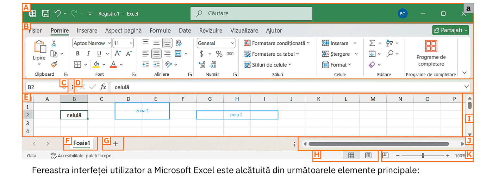
Include toate comenzile Excel, grupate pe file, pe tipuri de acțiuni. O filă are grupuri logice de comenzi, iar fiecare grup are butoane individuale.
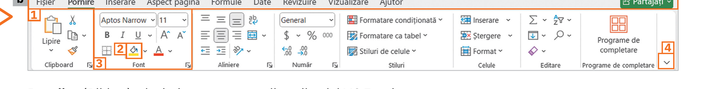
La selectarea filei Fișier, se deschide o vizualizare specială numită Backstage, cu toate acțiunile asupra fișierului: creare, deschidere, salvare, export, partajare, tipărire, închidere.
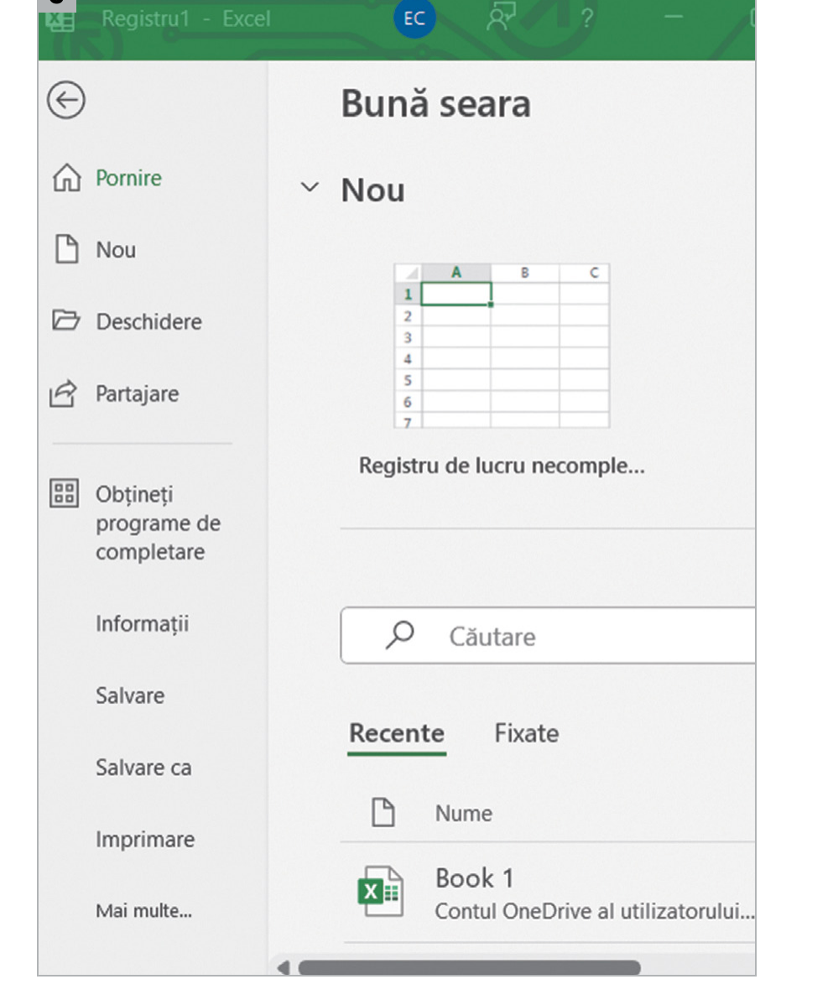
Comenzile de bază pentru editarea și formatarea celulelor unui tabel.
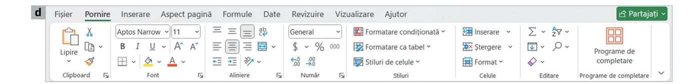
Lipire, Copiere, Decupare — și Descriptor de formate, pentru a copia formatarea unei celule pe altă celulă.
Tip și dimensiune literă, Bold/Italic/Underline, culoare text, Culoare de umplere a celulei, borduri.
Aliniere orizontală/verticală, încadrare text pe mai multe linii, îmbinare celule.
Formatul celulei: General, Monedă, Procent, zecimale — vezi secțiunea „Tipuri de date".
Formatare condiționată (evidențiază automat valorile după o regulă), Formatare ca tabel, Stiluri de celule predefinite.
Inserare/Ștergere rânduri și coloane, Format (înălțime rând, lățime coloană).
Sumă automată (Σ), Umplere, Sortare și filtrare rapidă, Găsire și selectare.
Suplimente/extensii instalate pentru Excel.
Adaugă elemente noi de conținut într-o foaie de calcul.
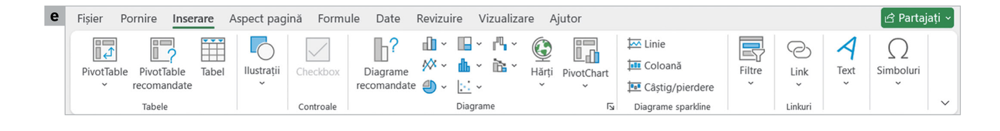
PivotTable / PivotTable recomandate (tabele centralizatoare interactive), Tabel simplu.
Ilustrații (imagini, forme, pictograme), Checkbox pentru liste bifabile.
Diagrame recomandate, toate tipurile de grafice, Hărți, PivotChart — vezi secțiunea „Grafice".
Mini-grafice („Linie", „Coloană", „Câștig/pierdere") care încap într-o singură celulă.
Hiperlinkuri către pagini web sau alte foi; segmente de filtrare (Filtre).
Casetă text, WordArt; simboluri și caractere speciale.
Instrumente de desen, subliniere, notițe scrise de mână — utile mai ales pe ecrane tactile. Butonul Cerneală în expresie matematică recunoaște automat o formulă scrisă de mână și o transformă în text.
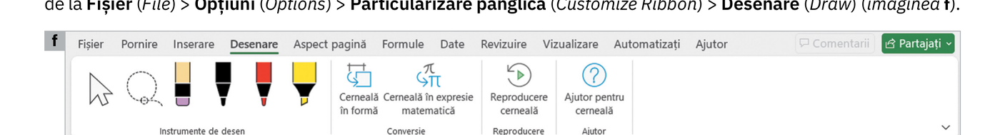
Diverse markere colorate și instrument de selecție pentru desen liber.
Cerneală în formă / Cerneală în expresie matematică — transformă scrisul de mână în forme sau formule curate.
Redă pas cu pas desenul; ajutor pentru instrumentele de cerneală.
Configurarea aspectului paginilor și a modului în care se aranjează tabelele foarte mari la tipărire.
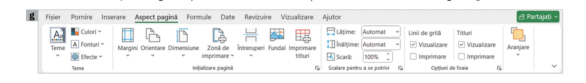
Culori, Fonturi și Efecte armonizate, aplicate registrului dintr-un click.
Margini, Orientare (Portret/Vedere), Dimensiune, Zonă de imprimare, Întreruperi, Fundal, Imprimare titluri.
Lățime, Înălțime și Scară — utile ca tabelul mare să încapă pe o singură pagină tipărită.
Linii de grilă și Titluri (rânduri/coloane) — vizualizare și/sau imprimare.
Poziționarea obiectelor (imagini, forme) față de celulele cu conținut.
Toate uneltele pentru scrierea și verificarea formulelor de calcul.
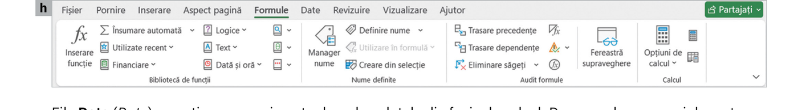
Inserare funcție, funcții Financiare, Logice, Text, Dată și oră — grupate pe categorii.
Poți da un nume unei celule/zone (ex. „TVA") și îl folosești direct în formule, în loc de adresa celulei.
Trasare precedente — arată ce celule afectează celula curentă. Trasare dependențe — arată ce celule sunt afectate de ea. Foarte utile ca să înțelegi/depanezi un tabel complex.
Opțiuni de calcul — automat sau manual, pentru registre foarte mari.
Lucrul cu datele din foaia de calcul: sortare, filtrare, scindare de text în coloane.
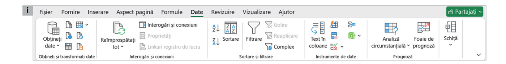
Importă date din alte fișiere sau surse externe.
Gestionează legăturile către alte registre de lucru.
Sortare crescătoare/descrescătoare (după unul sau mai multe criterii), Filtrare pentru a afișa doar anumite rânduri.
Text în coloane — desparte o coloană (ex. nume complet) în mai multe coloane (nume + prenume).
Analiză circumstanțială, Foaie de prognoză — estimează valori viitoare pe baza datelor existente.
Verificare ortografică, comentarii, protejare prin parolă.
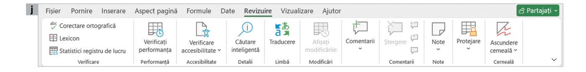
Corectare ortografică, Lexicon, Statistici registru de lucru.
Verifică ușurința în utilizare a registrului; Căutare inteligentă pe internet.
Traducere a textului din celule.
Adaugă observații pe marginea celulelor, vizibile pentru colaboratori.
Protejare prin parolă a foii/registrului; Ascundere cerneală (adnotările de mână).
Cum afișezi foaia de calcul pe ecran.
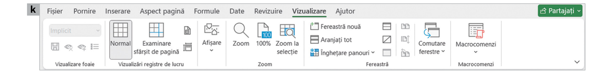
Normal, Aspect pagină, Examinare sfârșit de pagină (utilă înainte de tipărire).
Riglă, Linii de grilă, Bara de formule, Titluri — arată/ascunde instrumente ajutătoare.
Mărește/micșorează zona vizibilă a tabelului; Zoom la selecție.
Fereastră nouă, Aranjați tot, Înghețare panouri (păstrează antetul vizibil la derulare), Comutare ferestre.
Automatizează acțiuni repetitive înregistrate ca o secvență de pași.
Ultima filă din panglică — căutare de informații despre utilizarea programului și trimitere de feedback către Microsoft.
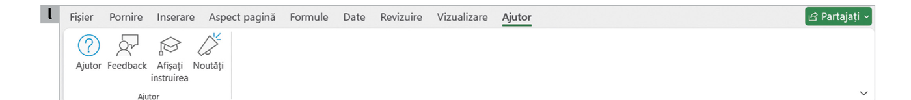
Ajutor, Feedback, Afișați instruirea, Noutăți — util când nu știi cum se face ceva în Excel.
În plus, fila Partajați (dreapta-sus) permite lucrul colaborativ pe același registru, dacă acesta e salvat în cloud.
La fel ca în orice aplicație de birou — creare, deschidere, salvare, tipărire, închidere.
Registru necompletat din ecranul de start, sau Fișier → Nou, sau Ctrl+N.
Fișier → Deschidere sau Ctrl+O.
Salvare (Ctrl+S) păstrează numele/formatul; Salvare ca (F12) schimbă numele, tipul sau locația.
Normal, Aspect pagină sau Examinare sfârșit de pagină, din fila Vizualizare.
Fișier → Imprimare — la o imprimantă reală sau într-un fișier .pdf.
Fișier → Închidere sau butonul din colțul din dreapta-sus.
Poți formata atât rândurile și coloanele, cât și celulele — în funcție de informația pe care o conțin.
Poziționezi mouse-ul pe linia dintre literele care etichetează două coloane alăturate. Cursorul devine o linie verticală cu două săgeți — ții apăsat și tragi, micșorând sau mărind lățimea coloanei din stânga cursorului. Dublu clic pe acea linie ajustează automat lățimea la mărimea minimă necesară textului. La fel procedezi și pentru înălțimea rândurilor, pe linia dintre etichetele numerice.
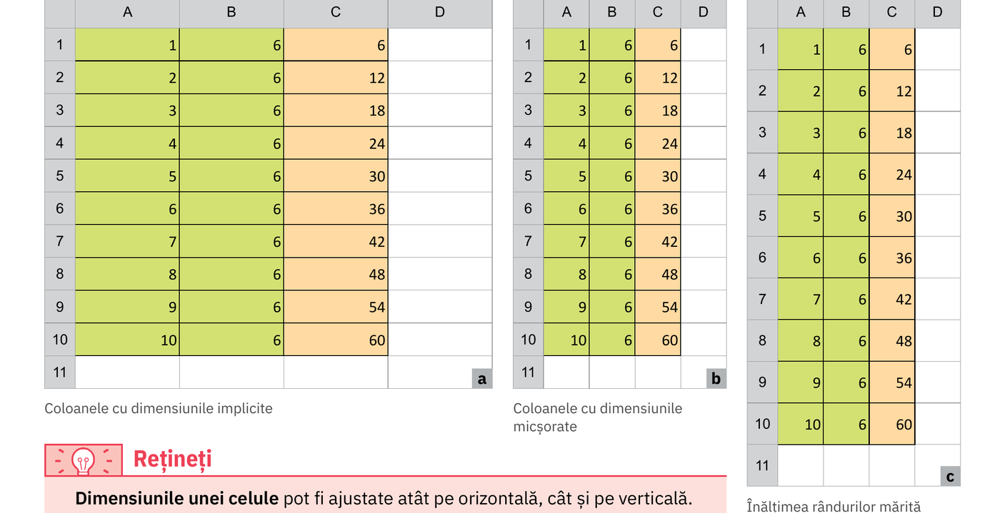
Excel oferă stiluri de celule predefinite (fila Pornire → grupul Stiluri → Stiluri de celule), dar poți și să-ți creezi propria formatare. Clic-dreapta pe o celulă → Formatare celule... deschide o fereastră cu mai multe file:
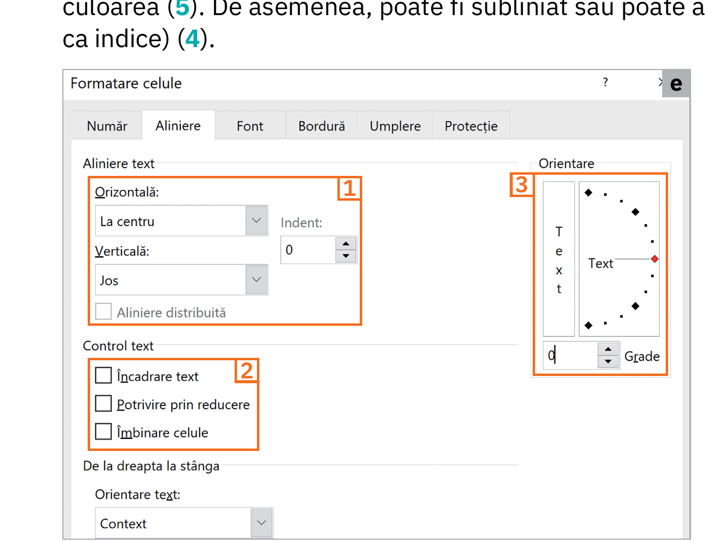
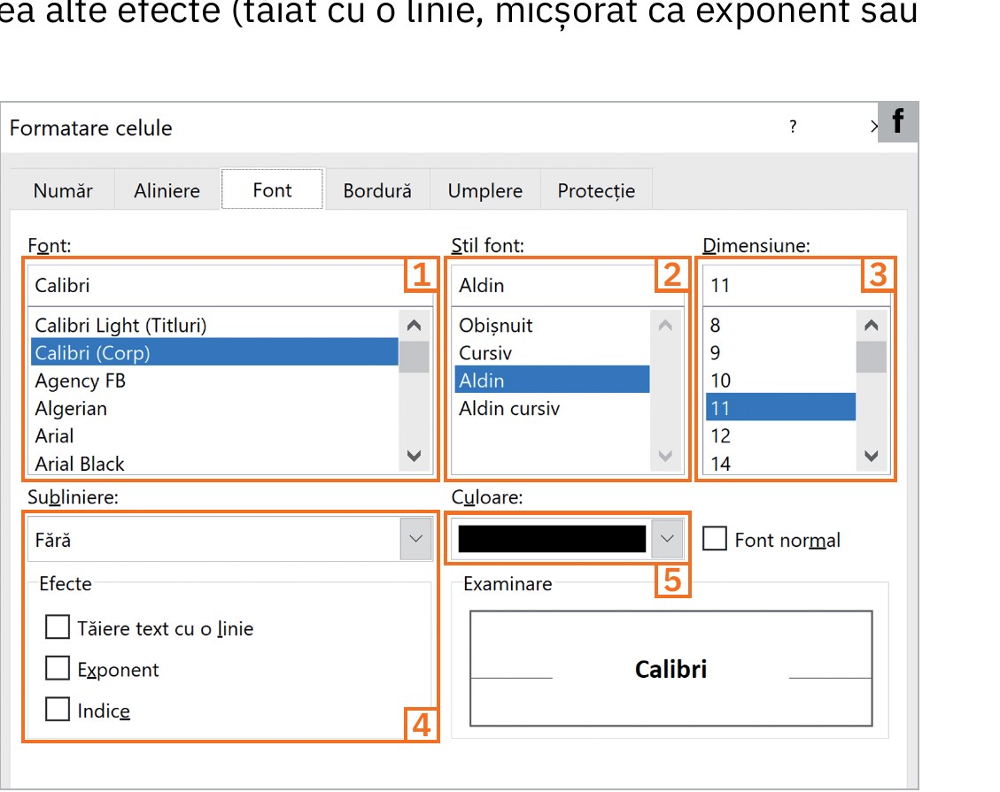
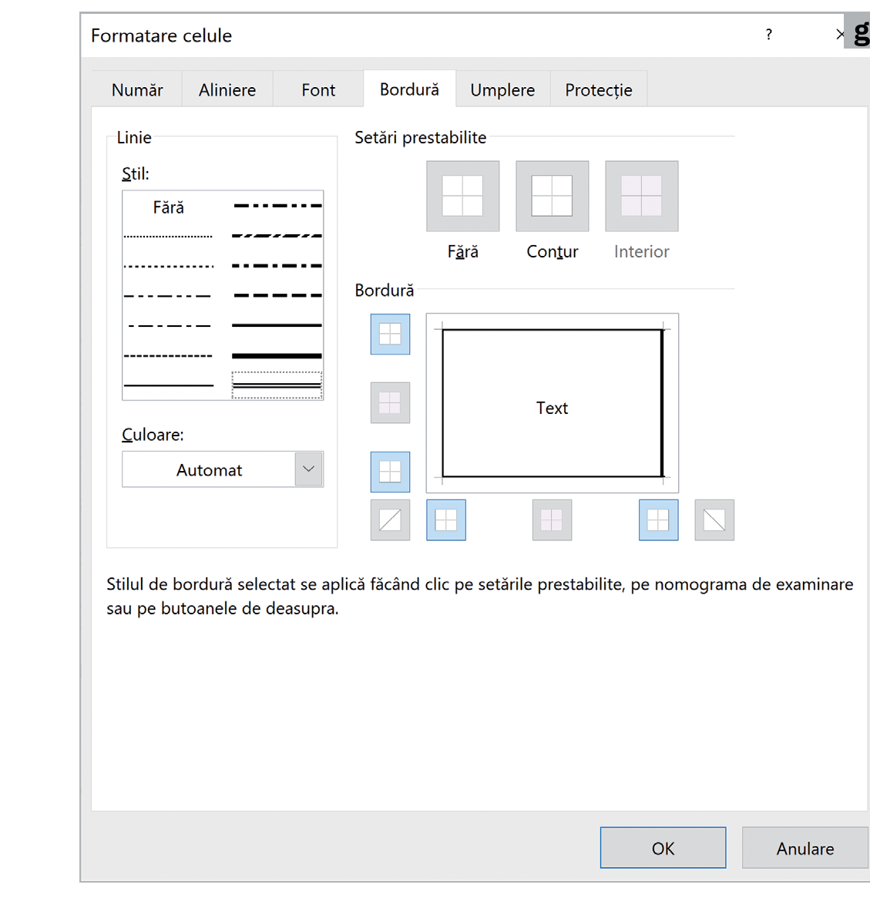
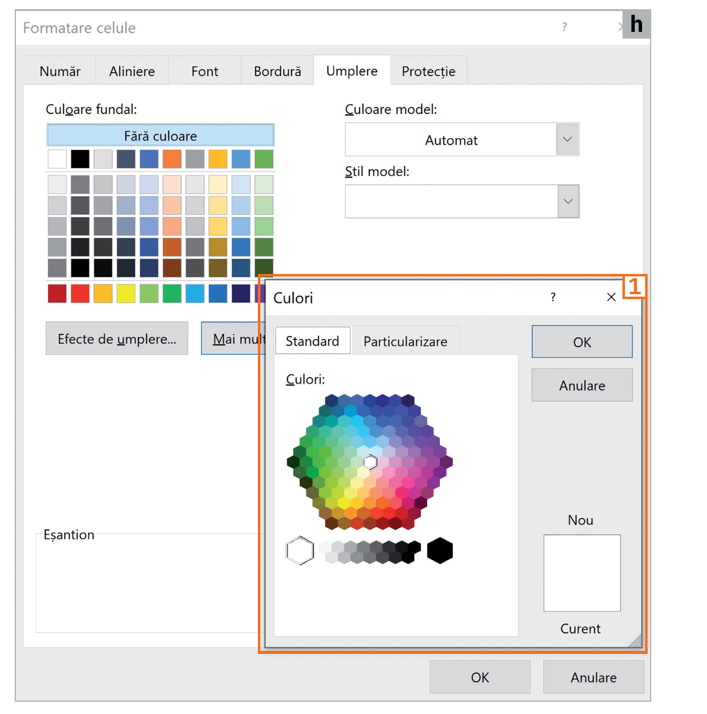
Poți combina liber toate aceste opțiuni: o celulă poate fi, în același timp, aldină, centrată, cu fundal galben și bordură dublă.
Poate cea mai importantă opțiune de formatare a unei celule, din punct de vedere practic, e faptul că îi poți configura conținutul să fie de un anumit tip.
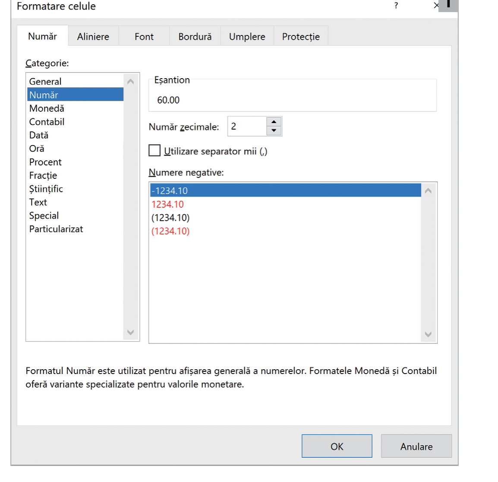
Menirea principală a unei foi de calcul este să obții rezultate calculate automat, pe baza unor formule.
Adunare / scădere. Ex: =A2+B2
Înmulțire / împărțire. Ex: =A8*B8
Ridicare la putere. Se pot folosi și paranteze, cu aceeași prioritate ca la matematică.
Un avantaj esențial: dacă scrii formula cu referințe de celule (=A1*B1) în loc de valori fixe (=1*6), și apoi o copiezi în altă celulă, Excel adaptează automat formula la rândul nou. Poți chiar trage de colțul din dreapta-jos al celulei pentru a replica formula pe un întreg tabel.
Exemplu de expresie complexă, combinând operatori și paranteze: =((A1+A2)*(A4-B4))/((A8*B8)+(A11/B11))
Adună valori individuale, celule sau zone întregi.
Calculează media aritmetică a unui grup de numere.
Întorc valoarea cea mai mare, respectiv cea mai mică, dintr-un set de valori.
Compară o valoare cu o condiție și întoarce unul dintre două rezultate posibile.
Numără câte celule dintr-o zonă conțin numere (ignoră textul și celulele goale).
Numără câte celule dintr-o zonă nu sunt goale (text sau numere).
Numără câte celule dintr-o zonă îndeplinesc o condiție.
Adună doar valorile care îndeplinesc o condiție.
Rotunjește un număr la câte zecimale specifici.
Întoarce restul unei împărțiri — util ca să testezi dacă un număr e par/impar sau divizibil cu ceva.
Poți folosi mai multe funcții împreună cu operatorii aritmetici, pentru expresii mai complexe. Exemplu: =SUM(B1,B2)*MIN(C1,C2,C3)/MAX(C4,C5) — sau chiar =IF(COUNTIF(C2:C11,"<5")>0,"Are corigențe","Toate notele sunt de trecere").
O diagramă (grafic) te ajută să înțelegi dintr-o privire ceea ce ai în tabel. Se creează în 4 pași: faci tabelul cu date → îl selectezi → fila Inserare → grupul Diagrame → alegi tipul potrivit. O diagramă se actualizează automat dacă modifici datele din tabelul din care a fost generată.
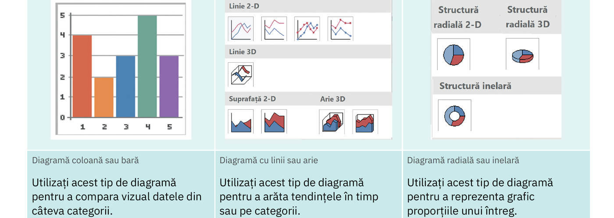
Compari valori între câteva categorii (ex. note pe materii, vânzări pe produs).
Arăți o tendință în timp sau pe etape (ex. evoluție, creștere, scădere).
Reprezinți proporțiile unui întreg — cât la sută reprezintă fiecare parte.
Verifici dacă există o legătură (corelație) între două seturi de valori numerice.
Iată patru situații reale, cu grafice construite direct pe pagină — apasă și explorează, apoi citește interpretarea.
Descarcă fișierul de mai jos. Conține două foi de calcul, doar cu date brute — restul îl faci tu, urmând cerințele.
2 foi de calcul · „Elevi" și „Papetărie" · gata de completat
10 întrebări rapide. Alege un răspuns și vezi imediat dacă e corect.